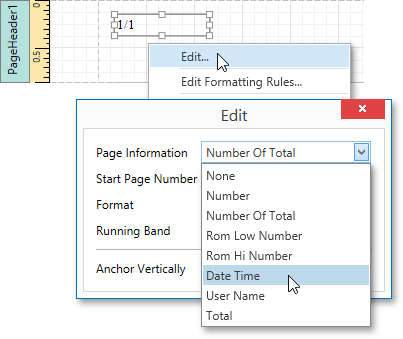

Add Page Numbers and System Information to a Report
This document describes how to insert page numbers or other system information (e.g., current date and time, user name, etc.) into a report.
Generally, this information is displayed within the Page Header and Footer or Page Margin bands. To add page numbers or system information to a report, drop the Page Info control from the Control Toolbox onto a band.

Then, follow the instructions below for your specific task.
Add Page Numbers
To insert page numbers in a report, do the following.
Right-click the Page Info control, and in the context menu, click the Edit... link. Then, in the invoked dialog, specify the Page Information property.

You can choose one of the following formats for displaying page numbers.
- Number - displays the current page number only.
- Number of Total - displays the current page number with total pages.
- Rom Low Number - the current page number is written in lowercase Roman letters.
- Rom Hi Number - the current page number is written in uppercase Roman letters.
- Total - displays the total number of pages.
To format the control's text, in the Edit dialog, specify the required format (e.g., Page {0} of {1}).

- You can also specify the Start Page Number and Running Band properties. For instance, the latter is available when there are groups in a report, and you are required to apply independent page numbering for them.
The result is shown below.

Add System Date and Time
To insert the current system date and time into a report, perform the steps below.
Right-click the Page Info control and select Edit... in the context menu. In the invoked dialog, expand the Page Information drop-down and select Date Time.

To format the control's text, you can either type it in the Format property, or click its ellipsis button and use the Format String Editor.

The result is shown below.

Add the User Name
To display the current user name in a report, do the following.
Right-click the Page Info control and select Edit... in the context menu. In the invoked dialog, expand the Page Information drop-down and select User Name.

To format the control's text, in the Edit dialog, specify the required format (e.g., Current User: {0}).

The following image demonstrates the result.